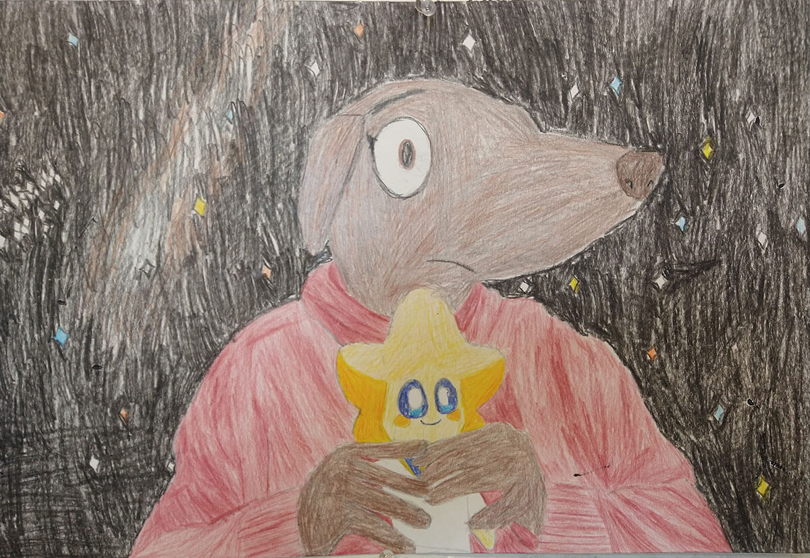
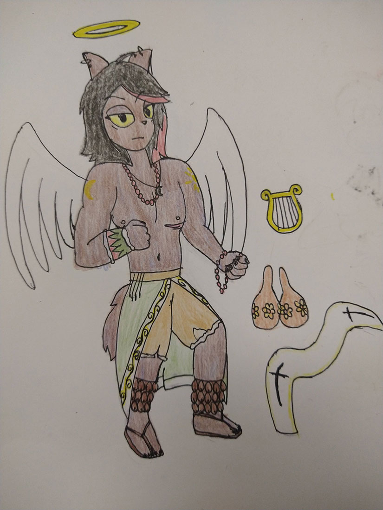
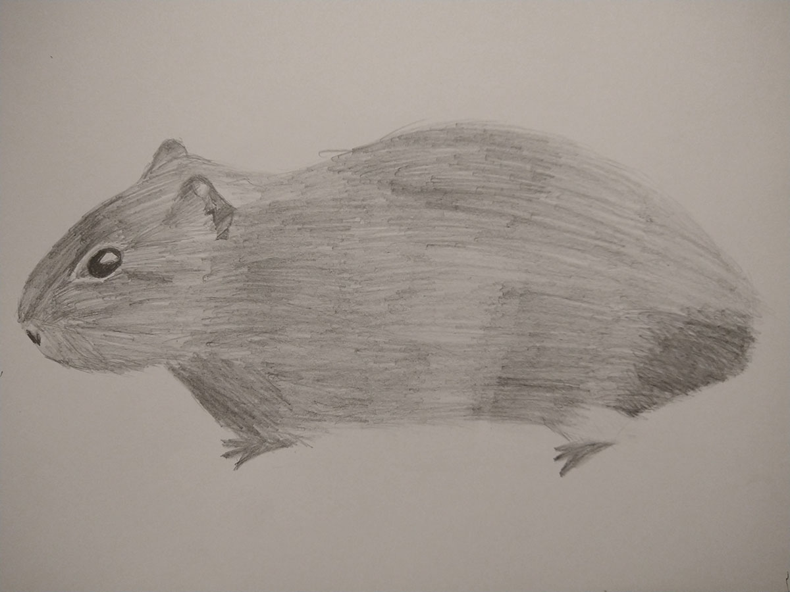

About Me
Hello! My name is Puck Reverie. I am a digital artist who is currently studying and improving their digital media portfolio. I'm excited to learn more about the art making process. I'm working to improve my drawing skills.
My Work

Mini Tech Museum
This is a 3D printed version of the Tech Museum of Innovation in San Jose. I created the model in Minecraft, then I exported the world into Mineways, then I exported it again into Flashpoint. I then exported it once again into a file format for 3D printers and printed it out. I then painted the model to resemble the actual building. Originally made for my Intro to Digital Media Art class in Spring 2024.


Me and Lumi
This is a drawing of my "fursona" holding my favorite plushie: Lumi from Lumi and the Great Big Galaxy. It was done as a part of my Intro to Drawing class in Spring 2025. The species I chose to represent myself with was a pakicetus, an ancestor of the modern day whale.

Happy New Year 202X!
New Art! I drew Puck Reverie and his friends & acquaintances taking a selfie at Grand SymphonyLand (Disneyland) while celebrating the New Year! He's with his best friends Sparko, Punching Judy, Sally Harmony [note: Sally is my Original Character for a fanfiction idea that I have planned] and his sweetheart Glitter Starlight! They met up with the Point Prep crew as well! Phoebe, Demon Queenie, Purrcival and Chiff are all present! I didn't draw a background for it yet but I promise I'll learn to do them someday.
Original text from DeviantArt.
Link to the pic.

Yaqui Puck Reverie
I drew Puck Reverie in a mix of traditional Catholic and Yaqui clothing. I wanted to create some headcanons about his culture cause I'm part Yaqui and cause he has little written about him in canon. Void. [Note: Puck Reverie is my namesake character; when I was watching OK KO on Cartoon Network, I was immediately drawn to him and wanted to learn more about him. I was disheartened to learn that there is little information about him in canon which is why I decided to come up with my own interpretations and headcanons for him.
Original art piece from DeviantArt.
Link to the pic.

Wild Guinea Pig
This is a drawing of a wild guinea pig I made a couple of years ago. It's a sketch I did with pencils in my sketchbook based on a reference photo.
Contact Me
Email: aaronromero489@gmail.com